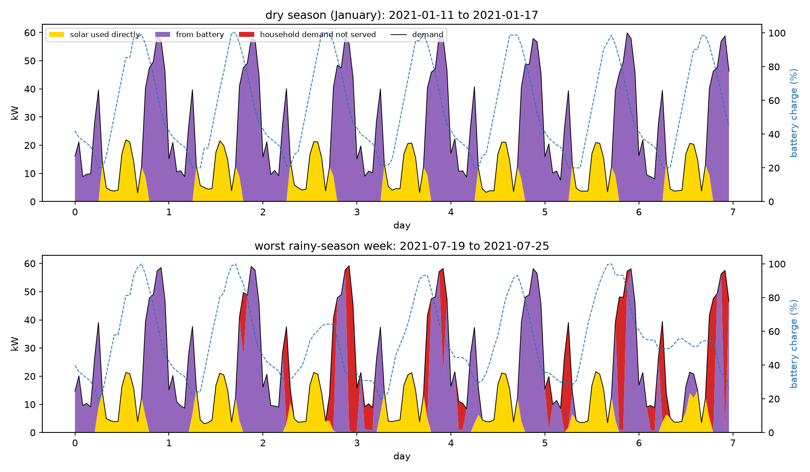
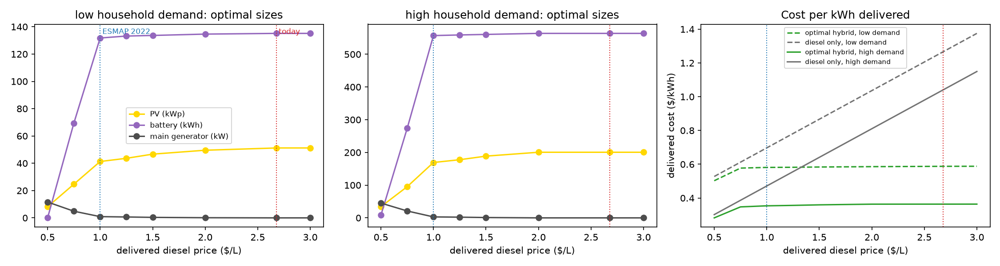

Many Nigerian villages far from the national grid get their electricity from small petrol and diesel generators, at whatever the fuel costs by the time it reaches them. In Cross River State diesel cost about ₦3,390 a litre in May 2026 (National Bureau of Statistics), before transport to a village. Solar mini-grids are the main alternative, and the planning question is how big each part should be: how many panels, how much battery, and whether a diesel generator is still worth having. My background is smart metering and energy data in Nigeria; this project looks at the step before metering, sizing the supply. For one real village cluster it asks which mix of solar, battery and diesel gives a reliable supply at the lowest cost, and how much that answer depends on the diesel price, equipment costs, the reliability target and demand growth.
Site. Cluster 10645 in Umon South ward, Biase LGA, from the Reiner Lemoine Institut / GIZ rural electrification dataset for Cross River: 312 customers, a primary health centre and a primary school, with no grid connection. Solar: the PVGIS 5.3 typical year for the site gives about 1,450 kWh per kWp a year, falling to 3.1 kWh/kWp a day in July, the rainy season.
Demand. One year of hourly demand is built with the RAMP model from appliance counts and usage hours in the World Bank Multi-Tier Framework survey of Nigeria (2018, survey-weighted). The survey covers only the North-West, so Cross River households are assumed to be similar. Two household cases bracket the answer: low, like the average rural household in the survey, and high, like rural households already on the grid. The school (2.4 kWh/day) follows a Lighting Global design for a Nigerian school; the clinic is 19 kWh/day (Lighting Global health-centre design) or 36 kWh/day (SEforALL, Type 2 health centre). Village totals are about 136 and 568 kWh/day, with the peak at 21:00–22:00, after sunset.
Costs. Equipment costs are the medians from the World Bank ESMAP report Mini Grids for Half a Billion People (2022): solar $441/kWp plus $340/kWp for structures, civil works and powerhouse (balance of system), lithium-ion battery $314/kWh, battery inverter $415/kW, distribution and meters $250 per customer. The generator ($172/kW) and lifetimes come from Esan et al. (2019, Nigeria). Diesel delivered to the village is the state price plus an assumed 10 % for transport, $2.68 a litre; at 0.34 L/kWh, generator electricity costs about $0.96/kWh. Every investment is turned into an equal yearly cost at a 10 % real discount rate over 20 years; Naira at the CBN rate of 25 November 2026 (₦1,391.75 per US$).
A linear optimisation in PyPSA (HiGHS solver) chooses the sizes of solar, battery, inverter and generator and the dispatch in all 8,760 hours of the year, at least total yearly cost. The clinic and school must be supplied in every hour; households may go short of at most 5 % of their yearly energy. Three designs (diesel only, solar plus battery, and a hybrid allowed to build all three) are solved for both household cases and both clinic cases, 12 runs in all. Each run is checked outside the solver: hourly energy balance, battery limits and total cost. Battery wear is checked afterwards: about 320 full cycles a year against a rating of 3,000 cycles gives a 9.3-year life instead of 10, and the extra replacement cost is added.
Foresight check. An optimiser that sees the whole year knows the weather in advance. Each least-cost system is therefore also run hour by hour with a simple rule and no foresight: solar first, then the battery (clinic and school first, households second), then the generator. The cost reported for the final design comes from this run.
| Final design | Low household demand | High household demand |
|---|---|---|
| Solar PV / battery (Li-ion) / battery inverter, plus a 3–5 kW backup generator for the clinic and school | 51–59 kWp / 135–143 kWh / 17–18 kW | 201–208 kWp / 564–571 kWh / 70–71 kW |
| Households' energy not served / longest outage / clinic and school hours cut | 4.5–4.6 % / 13 h / 0 | 4.9 % / 13 h / 0 |
| Delivered cost per kWh | $0.54–0.59 (₦757–818) | $0.36 (₦500–506) |


At today's delivered diesel price the question for a village like this is no longer solar or diesel, but how much battery and how to protect the health centre and school. Without the optimiser's perfect foresight they need either a small backup generator or a battery reserve kept for them, a trade-off between diesel and households' supply that the optimisation alone hides. A main generator of real size pays only below about $1.50 a litre; what moves the cost most is the cost of capital, battery prices and how fast demand grows. Next steps: many weather years instead of one, the village's low-voltage network in pandapower (as in my meter-trust project), and a comparison with what households now spend on generator fuel.